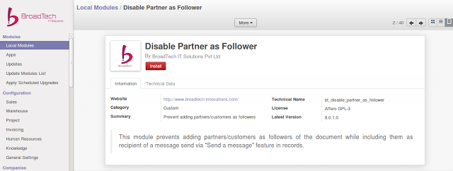

<section class="oe_container">
    <div class="oe_row oe_spaced">
        <h2 class="oe_slogan">Disabling Adding Partner as Follower</h2>
        <div class="oe_span12">
            <p class='oe_mt32'>
This module prevents adding partners/ customers as followers of the document while including them 
as recipient of a message send via "Send a message" feature in records. 
            </p>
        <div class="oe_span12">
        <div class="oe_row_img oe_centered">
            
        </div>
        </div>
        
    <p class='oe_mt32 oe_spaced'>
    For any assistance please feel free to contact us: contact@broadtech-innovations.com
     </p>
        </div>
       
    </div>
</section>